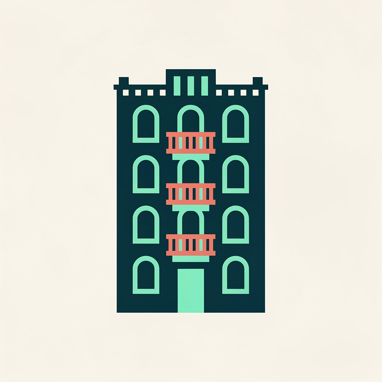
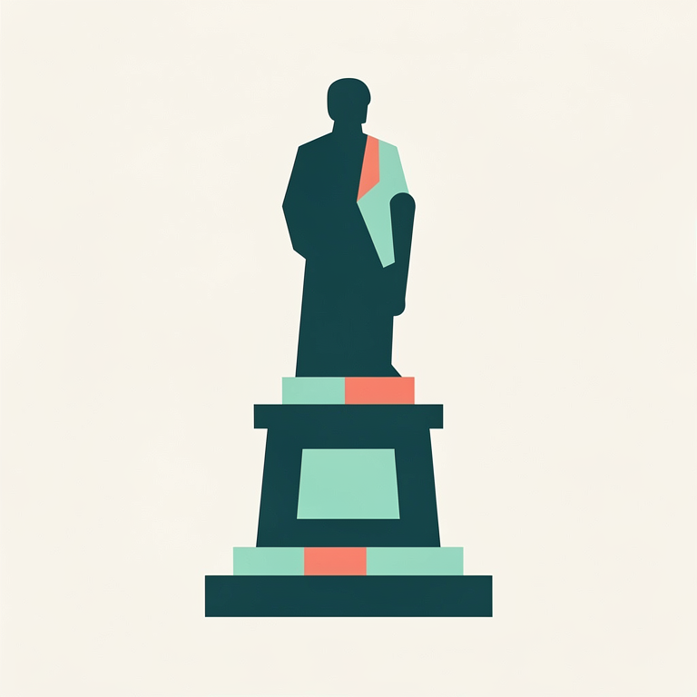
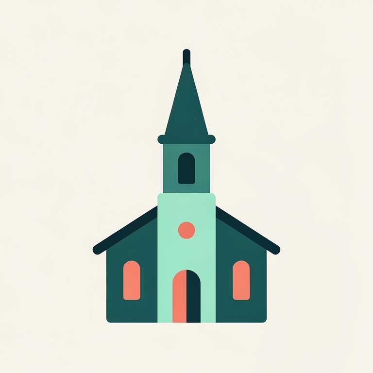

Ł
Pętla stądBez celu, Sawa wybierze miejsca i wrócisz tu
Łazienki KrólewskieŚródmieście · 4,8 km · 31 opowieści
ŁuckaWola · 0,9 km · 3 opowieści
Plac ZamkowyOstatnio · Stare Miasto
Odkryj w pobliżu

Kamienice
PomnikiMurale

KościołyPolecane przez Sawę

KercelakNajwiększy bazar przedwojennej Warszawy · 150 m